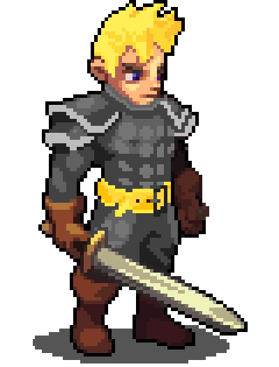

Em um reino antigo envolto por neve e magia, a princesa Eveline, herdeira do trono de Frostveil, foi capturada por uma poderosa e maligna bruxa Morgath. Acredita-se que Morgath tenha sequestrado ela para obter o controle do trono e as escolhas daquele mundo. O príncipe cavaleiro Henry, irmão de Eveline, soube do sequestro por meio de uma carta deixada pela bruxa, onde o desafiava a resgatar sua irmã. A carta, envolta em energia sombria, advertia que, se ele não fosse rápido, a vida de Eveline estaria contada, condenando-a a um destino horrível...
A Floresta das Sombras... Um lugar denso e escuro, onde a luz do sol mal consegue penetrar pelas copas das árvores. O objetivo aqui é escapar e atacar as criaturas que vivem no meio desse vasto vazio. Os goblins estão por vir... Fuja!

O Lago Silencioso... Ambiente frio e sereno na superfície, mas com águas profundas e traiçoeiras. A atmosfera silenciosa carrega consigo segredos de algumas criaturas que ali vivem. As lesmas estão prontas para atacar... Desvie!
A Caverna Traiçoeira... Uma passagem subterrânea que desafia tanto a resistência física quanto a mental. Ambiente escuro e perigoso, é de grande coragem quem entra neste covil de criaturas. Os morcegos estão famintos...
O castelo de Morgath... Com atmosfera sufocante, a etapa 4 vem para destacar o perigo que corre e a presença maligna da bruxa. O ogro, seu maior desafio, fará de tudo para que ninguém jamais entre no poderoso castelo. Derrote-o!
Henry, o Cavaleiro: Irmão da princesa Eveline e protagonista da jornada. Determinado e corajoso, ele enfrentará todos os desafios para salvar sua irmã das garras da bruxa Morgath.
Eveline, a Princesa Aprisionada: Herdeira do trono de Frostveil. Capturada por Morgath, ela aguarda ser resgatada enquanto luta para manter a esperança viva em meio à escuridão.
Lesma: Uma criatura que habita o pantano, traiçoeiras e gosmentas, ela tem o poder de ataque muito forte e não irão hesitar em atacar que as ameassam ou andam em seu territorio.
Pequeno morcego: Uma criatura que habita a caverna, não se iluda pelo tamanho, pois ele é feroz se invadirem seu territorio.
Goblin Guerreiro: Uma das criaturas que habitam a Floresta das Sombras. Ágeis e traiçoeiros, esses goblins não hesitarão em atacar qualquer intruso.